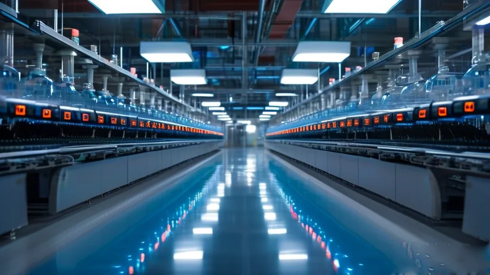
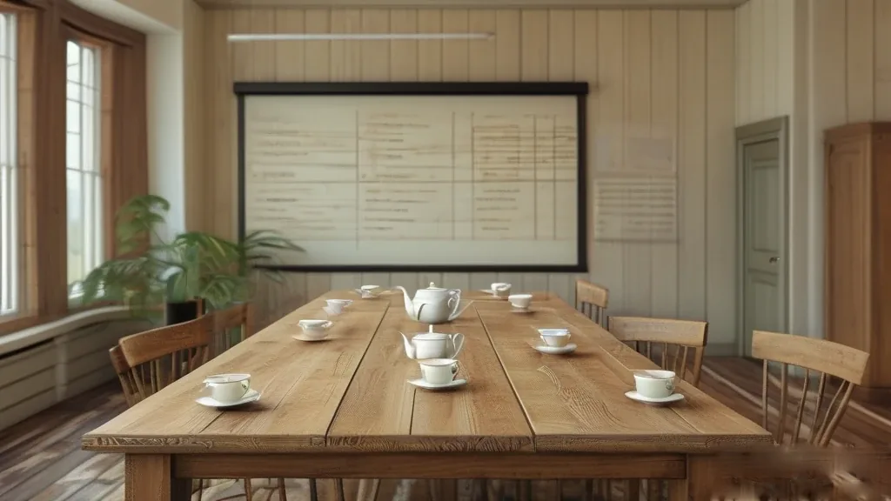
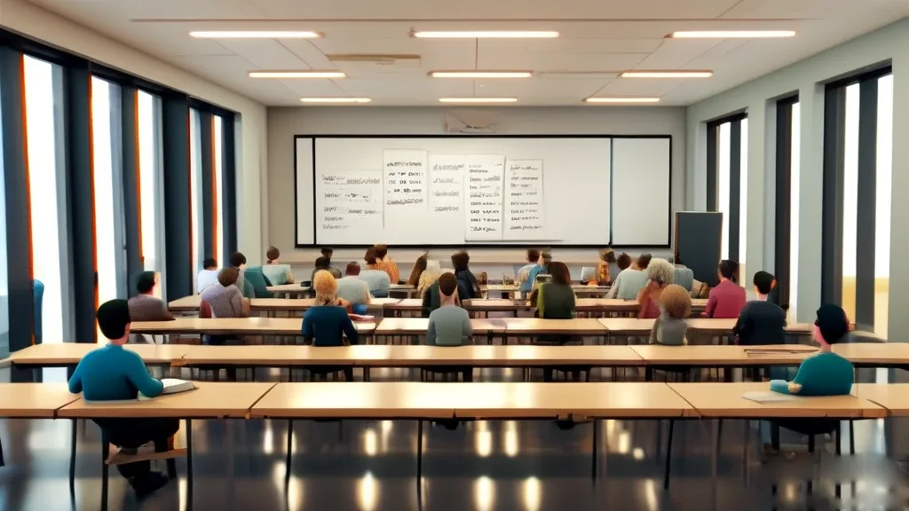
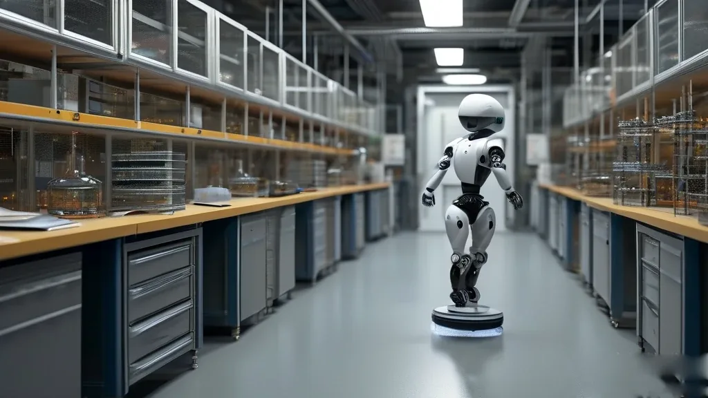

圖片由 AI輔助創作Image by AI
【鄭哥點評】欄目：鄭哥博客點評｜日期：2026-11-07
今日五條：黃埔前三季404個項目、1331億；深圳把科技貸款門檻寫成「研發強度10%」；廣東開1000個初創培訓位，每人補1萬；全省3.7萬億耐心資本，容許單項目虧100%；北京一隊做世界模型嘅後生仔，半年三輪，名單上有深圳國資。擺埋一齊，篩子換咗——以前問你有幾多故事，今日問你有幾密。

圖片由 AI輔助創作Image by AI
一、黃埔：404個項目，1331億
11月4日，第十二屆廣州國際投資年會開幕。主場黃埔：前三季新簽約優質項目404個，協議投資約1331億元；新簽約且註冊嘅百億級項目4個、十億級20個。方向集中——廣合科技做高端PCB，興森快捷加碼AI集成電路載板，廣芯半導體先進封裝基板動工，總投資約252億元嘅粵芯四期啟動。
底氣係幾十年砌出嚟：約8300億元規上工業產值、超150家集成電路企業、全國近十分之一PCB產能。1至8月半導體同集成電路產值超310億元，同比增36.6%。老企業亦加碼：9月12個重大項目動工約169億元，存量企業增資擴產佔八成長；安美特二期2500萬美元，2027年第四季完工後產能翻倍。
來源：廣州日報《黃埔：「算電藥顯」掀投資新熱潮》，2026-11-04（黃埔區政府網站轉載，2026-11-05）｜http://www.hp.gov.cn/xwzx/mtxx/content/post_11089446.html

圖片由 AI輔助創作Image by AI
二、深圳：把「研發強度」寫成貸款門檻
11月3日，深圳市科技創新局按人行、科技部、財政部聯合印發嘅《實施方案》徵集融資需求。條件好死：註冊深圳（含深汕）嘅民營中小微；上一年度研發強度（研發費除營業收入）達10%且研發費100萬元以上；領域要落在新興同未來產業重點範疇，由人工智能、集成電路、低空經濟、具身智能到6G，共十五類。
支持係財政貼息加融資擔保，2026年起新發放嘅科創類貸款符合條件可享中央財政貼息；11月12日前上國家科技管理信息系統填報。我睇呢條通知，重點唔係貼幾多，而係把「研發強度10%」寫成硬指標：軟件公司容易過，硬件小廠要交審計報表同加計扣除口徑嘅研發費，難度即刻見真章。
來源：深圳市科技創新局《關於組織開展2026年科技創新貸款支持研發投入水平較高民營中小企業融資需求信息徵集工作的通知》，2026-11-03｜https://stic.sz.gov.cn/xxgk/tzgg/content/post_13050814.html

圖片由 AI輔助創作Image by AI
三、廣東：1000個位，每人補1萬
2026年度廣東省初創企業經營者能力提升培訓開報名：省人社廳每人補1萬元學費，名額1000個擇優錄取，11月2日至11月20日在廣東公共就業服務雲平台報名；培訓由2026年12月到2027年6月，在廣州、深圳、珠海、肇慶。
六大專題，集中授課56學時，省內考察對接不少於3次，鏈接創投機構超100家。今年首次由創投機構承辦——深天使擔綱創業融資實訓，講BP打磨、融資節奏、股權設計；承辦方新增深圳大學同香港中文大學（深圳）。結業按學員兩成評優秀，優先推薦去大賽同融資洽談會。
來源：21經濟網（廣東經視）《2026年度廣東省初創企業經營者能力提升培訓正式啟動報名！》，2026-11-03｜https://www.21jingji.com/article/20261103/herald/e1fb46e84a88181d9b127a46bc15ee3e.html
圖片由 AI輔助創作Image by AI
四、3.7萬億與「容許虧100%」
11月4日南方+「廣東科技金融周」調研：全省超3.7萬億元資本流向創新一線。制度關鍵一步係2024年《廣東省科技創新條例》——全國率先提出，財政出資嘅科技創新類基金不以國有資本保值增值為主要評價指標。跟住廣州開發區科創母基金嘅種子直投、天使直投，單項目最高容許虧100%；深圳南山亦設同類基金，一樣容許100%虧損。
錢嘅形態亦變：5月啟動嘅廣東戰新引導基金目標註冊1000億元，係全省首隻不設固定存續期嘅引導基金；粵港澳大灣區創投引導基金目標504.5億元，存續期最長20年；信銀金投、招銀金融投資分別落戶廣州、深圳，註冊資本100億同150億元。意思好直接：肯等十年嘅錢多咗，但佢會問你條技術曲線有幾長。
來源：南方+《萬億級資本奔湧創新一線，廣東如何「藏富於科」？》，2026-11-04（廣東省委金融辦轉載）｜https://www.gdjr.gov.cn/gdjr/jrzx/dfjr/content/post_48448.html

圖片由 AI輔助創作Image by AI
五、冪級智能：半年三輪，深圳國資在名單上
11月5日《科創板日報》報道，北京冪級智能完成第三輪融資，金額數億元，投資方包括北京、深圳頭部國資、知名美元資本同頂級AI生態基金。公司今年1月成立，總部在北京，做物理AI基礎模型——用世界模型同密集學習，推人工智能自主學習。半年累計融資已數億元。
落地方面，佢嘅世界模型已在某全球機器人賽事提供底層技術支撐，並在真實場景商業化交付。10月中央辦公廳、國務院辦公廳《關於推動科技創新和產業創新深度融合的意見》點名具身智能；Gartner 預測2026年全球世界模型相關市場過50億美元。一間北京公司，深圳國資照樣入場——深圳嘅錢已唔止投深圳團隊。
來源：財聯社《科創板日報》〈冪級智能半年累計融資達數億元 北京、深圳等國資投了〉，2026-11-05｜https://www.chinastarmarket.cn/detail/2526500
圖片由 AI輔助創作Image by AI
六、鄭哥點評
第一，五個數字量同一樣嘢。1331億對404個項目，平均3.29億；169億12個項目，平均14.1億——黃埔搶大顆。深圳貸款要研發強度10%，量嘅係細廠。最難係中間層：唔大唔細、又拿唔出數。
第二，今個禮拜兩個死線，同你名氣無關。11月12日前填貸款需求，11月20日前報培訓。兩樣都係填表，兩樣都要數：一份審計報表，一份商業計劃書。
第三，3.7萬億唔等於人人有份。容許單項目虧100%，係鬆開決策者嘅手，唔係發保險畀創業者。有交付嘅人拿錢更快，只有故事嘅人更難。
一句到尾：篩子換咗，唔係收窄咗。交得出數，門就闊。
圖片由 AI輔助創作Image by AI
\[Zheng Ge's Take\] Column: Zheng Ge's blog commentary | Date: 2026-11-07
Five items today: Huangpu signed 404 projects worth 133.1 billion yuan in three quarters; Shenzhen turned a technology loan into a 10% R&D-intensity test; Guangdong offers 1,000 founder training places at 10,000 yuan each; the province holds 3.7 trillion yuan of patient capital allowed to lose 100% on one project; and a young Beijing world-model team closed three rounds in six months with Shenzhen state money on the list.
圖片由 AI輔助創作Image by AI
1. Huangpu: 404 projects, 133.1 billion yuan
The 12th Guangzhou International Investment Annual Conference opened on 4 November. The main stage was Huangpu: 404 quality projects signed in the first three quarters, with about 133.1 billion yuan pledged, including four hundred-billion-scale and twenty ten-billion-scale projects both signed and registered. The direction is concentrated - Guanghe in high-end PCBs, Xingsen Express adding AI substrates, Guangxin breaking ground on advanced packaging, and CanSemi's 25.2 billion yuan Phase IV starting.
The base took decades: about 830 billion yuan of industrial output, over 150 chip firms and nearly a tenth of China's PCB capacity. January to August chip output topped 31 billion yuan, up 36.6%. Incumbents are adding capacity: twelve projects broke ground in September worth 16.9 billion yuan, over 80% from existing firms; Atotech's second phase, at 25 million dollars, should double capacity by late 2027.
Source: 廣州日報《黃埔：「算電藥顯」掀投資新熱潮》，2026-11-04（黃埔區政府網站轉載，2026-11-05） | http://www.hp.gov.cn/xwzx/mtxx/content/post_11089446.html
圖片由 AI輔助創作Image by AI
2. Shenzhen: R&D intensity as the loan threshold
On 3 November Shenzhen's science and technology bureau began collecting financing demand under the joint plan of the central bank, the science ministry and the finance ministry. The conditions are rigid: a private small firm registered in Shenzhen, including Shenzhen-Shanwei; R&D intensity of 10% or more last year on at least one million yuan of R&D spending; and a field among fifteen priority areas, from AI, chips, the low-altitude economy and embodied intelligence to 6G.
Support is interest subsidy plus loan guarantees; technology loans newly issued from 2026 can get central fiscal subsidies. Filing closes on 12 November. What matters is not the subsidy but the hard 10% line: software firms clear it easily, while small hardware makers must produce audited statements and R&D figures on the super-deduction basis.
Source: 深圳市科技創新局《關於組織開展2026年科技創新貸款支持研發投入水平較高民營中小企業融資需求信息徵集工作的通知》，2026-11-03 | https://stic.sz.gov.cn/xxgk/tzgg/content/post_13050814.html
圖片由 AI輔助創作Image by AI
3. Guangdong: 1,000 places, 10,000 yuan each
Guangdong's 2026 training programme for early-stage founders is open: the provincial human resources department subsidises 10,000 yuan of tuition per person, with 1,000 places awarded on merit. Registration runs from 2 to 20 November on the provincial employment platform; training runs from December 2026 to June 2027 in Guangzhou, Shenzhen, Zhuhai and Zhaoqing.
Six tracks, 56 taught hours, at least three study visits and matchmaking sessions, and links to over 100 venture institutions. For the first time a venture investor runs a track - the Shenzhen Angel Investment Guidance Fund teaches business-plan polish, funding cadence and equity design. Shenzhen University and CUHK-Shenzhen are new hosts. The top 20% get referrals to competitions and financing meetings.
Source: 21經濟網（廣東經視）《2026年度廣東省初創企業經營者能力提升培訓正式啟動報名！》，2026-11-03 | https://www.21jingji.com/article/20261103/herald/e1fb46e84a88181d9b127a46bc15ee3e.html
圖片由 AI輔助創作Image by AI
4. 3.7 trillion yuan, and a licence to lose 100%
Southern Plus's 4 November survey of Guangdong technology finance found more than 3.7 trillion yuan of capital moving to the innovation front line. The institutional step came in 2024, when the provincial science and technology regulation became the first in China to say government science funds need not treat preserving state capital as their main measure. Guangzhou Development District's venture mother fund may then lose up to 100% on a seed or angel direct investment; Nanshan followed on the same terms.
The shape of money changed too: the provincial strategic emerging industries fund, launched in May, targets 100 billion yuan of registered capital with no fixed term; the Greater Bay Area venture fund targets 50.45 billion yuan over up to 20 years; CITIC Bank Financial Investment and CMB Financial Investment set up in Guangzhou and Shenzhen with 10 and 15 billion yuan. The message: more money can wait ten years, but it will ask how long your technology curve is.
Source: 南方+《萬億級資本奔湧創新一線，廣東如何「藏富於科」？》，2026-11-04（廣東省委金融辦轉載） | https://www.gdjr.gov.cn/gdjr/jrzx/dfjr/content/post_48448.html
圖片由 AI輔助創作Image by AI
5. Mixi Intelligence: three rounds in six months, Shenzhen state money on the list
On 5 November the STAR Market Daily reported that Beijing's Mixi Intelligence closed a third round of several hundred million yuan, with leading state capital from Beijing and Shenzhen, well-known dollar funds and top AI ecosystem funds. Founded in January and based in Beijing, it builds foundation models for physical AI - world models plus dense learning - and has raised several hundred million yuan in six months.
Its world model has backed a global robotics competition and has been commercially delivered in real settings. In October the central committee's general office and the State Council called for multiple routes and workable business models in embodied intelligence; Gartner expects the world-model market to pass five billion dollars in 2026. A Beijing company taking Shenzhen state money is the notable part: Shenzhen capital no longer only bets on Shenzhen teams.
Source: 財聯社《科創板日報》〈冪級智能半年累計融資達數億元 北京、深圳等國資投了〉，2026-11-05 | https://www.chinastarmarket.cn/detail/2526500
圖片由 AI輔助創作Image by AI
6. Zheng Ge's Take
First, the five numbers measure one thing. 133.1 billion across 404 projects is 329 million each; 16.9 billion across twelve is 1.41 billion - Huangpu wants the big pieces. Shenzhen's 10% rule is built for small firms. The middle is hardest: not big, not small, and unable to show numbers.
Second, two deadlines this week ignore your reputation. Loan filing by 12 November, training registration by 20 November. Both are forms, both need figures: audited statements and a business plan.
Third, 3.7 trillion is not a share for everyone. Allowing a 100% loss loosens the hands of decision-makers; it is not insurance for founders. Those who ship get money faster; those with only a story find it harder.
One line: the sieve has changed, not narrowed. Show the numbers and the door opens.